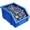
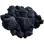
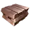

Variables et composants de commun/ficsit-hud.css, relevés sur des captures des menus du jeu (1.0 et 1.1). Toutes les pages du site s'en servent ; cette page permet de juger le rendu d'un coup d'œil.Variables and components of commun/ficsit-hud.css, taken from screenshots of the game's menus (1.0 and 1.1). Every page of the site uses them; this page shows the result at a glance.
Titre d'écran resserréCondensed screen title
Bandeau de sectionSection band
Texte courant en Noto Sans, la police libre la plus proche de celle du jeu. Les valeurs ressortent enBody text in Noto, the free typeface closest to the game's. Values stand out in orange : 271,2 /min.
Barre de titre grise, fermeture en case carrée, corps gris foncé.Grey title bar, square close button, dark grey body.

500
89
CadenceClock speed — 74 %
Tout attribut title s'affiche ainsi, à la place de la bulle du navigateur : survolez ou tabulez sur le bouton. La première ligne est le titre, les suivantes le détail.Any title attribute shows like this, instead of the browser's bubble: hover or tab to the button. The first line is the heading, the next ones the detail.
Variante à lignes titre / valeur (points du graphique de l'arbre) :Variant with label / value rows (tree chart points):
| RecetteRecipe | /min | MW |
|---|---|---|
| Plaque de ferIron Plate | 20 | 4 |
| Plaque de fer revêtueCoated Iron Plate | 75 | 15 |